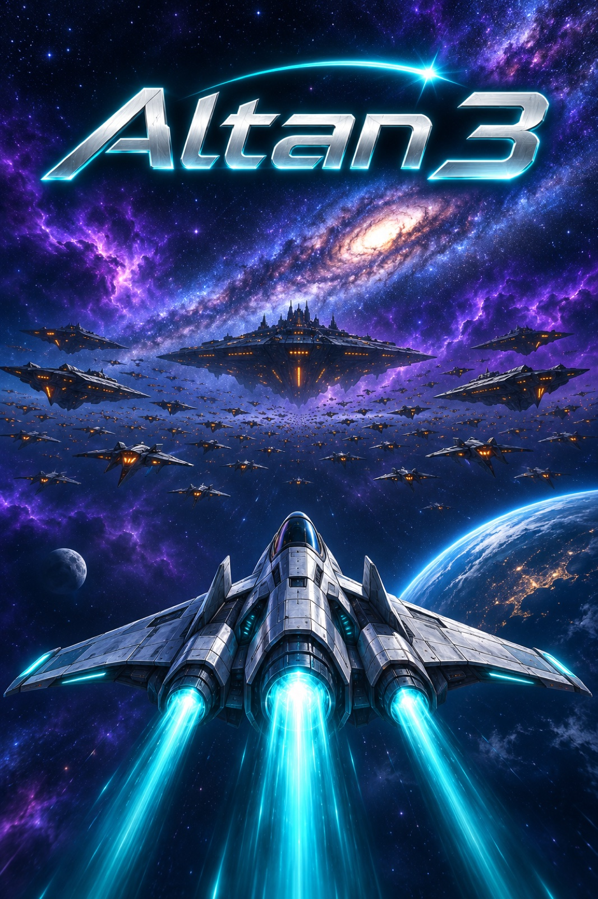
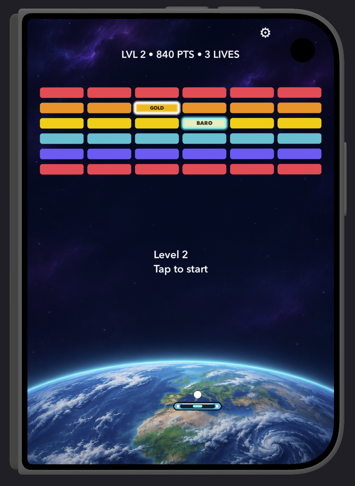

Space arcade · For iPhoneOne pilot.
One pilot.
One mission.
All of us.
The solar system is under attack. Take on alien formations, one sector at a time. Humanity believes in you.

25 sectorsEarth → NeptuneTilt & touch controlsLocal high scores

Classic reflexes. A cosmic mission.Keep it moving.
Keep it moving.
Break through.
Guide the paddle. Keep the ball alive. Clear the formations standing between you and the next destination.
01
Find your rhythm
Tilt your iPhone or drag the paddle with your finger. Time each return and keep the ball in play.
02
Push beyond Earth
Travel through 25 sectors set among the planets and moons of the solar system, all the way to Neptune.
03
Make the leaderboard yours
Enter your three-character name and save your best scores on your device. Then come back for another run.
From the first launch to the last sectorA whole solar system
A whole solar system
ahead of you.
Earth. The Moon. Mars. The moons of Jupiter and Saturn. Every stage brings you closer to the final destination.
Learn the controls →Ready for the next run?
Visit player support →Your mission. Your high score.
Need a hand with controls, settings or a problem?